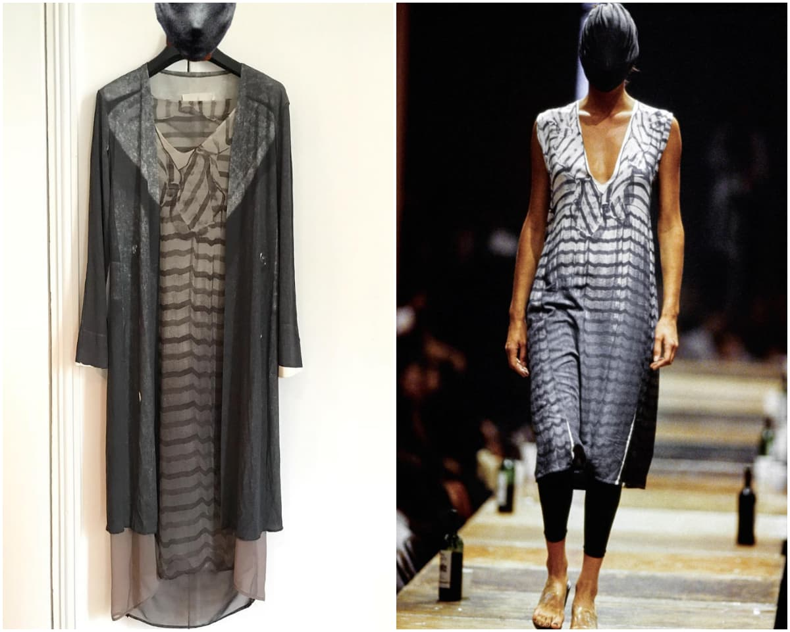

國外《Paper》的網站在八月初有了一篇講述 Fashion Archive（時尚精華/典藏）在 Instagram 興起的文章，這股趨勢在 2018 年就已逐漸開啟，人們在 IG 上看著他人的收藏或是曾經的大秀/秀片，看著從前的設計是如何的有趣以及影響當前，而 Adrian Appiolaza 便是其中的分享者。
在他衣櫥裡的是什麼？二手衣？Vintage？這些可能都不足以形容 Adrian Appiolaza 收藏的等級，作為 LOEWE 的成衣設計總監（Ready to Wear Design Director），一件件 Margiela、Comme des Garçons 早期的收藏完全電到了我們，帶著極高的收藏（轉售）價值，在日拍會用「激幻」形容的字眼，這幾乎只會出現在博物館裡的衣服，是什麼能令他這麼著迷？以下是我們的訪問內容：
首先，感謝你接受訪問， 可否請您先簡單自我介紹一下？
「我出生自阿根廷的首都布宜諾斯艾利斯，1994 年搬到倫敦，然後就讀聖馬汀的時尚設計科系，工作曾經歷 Alexander McQueen、Miguel Adrover、Chloé（Phoebe Philo 時期）、Prada / Miu Miu、Louis Vuitton（Marc Jacobs 時期）和 LOEWE，如今我住在巴黎。」
您現在是 LOEWE 的成衣設計總監，其工作內容是？
「基於保密協定，我無法向你透露工作細節，我只能說，我的工作就是負責管理成衣系列。」 https://www.instagram.com/p/Bwz0btHASl9/
您現在是 LOEWE 的成衣設計總監，其工作內容是？
「基於保密協定，我無法向你透露工作細節，我只能說，我的工作就是負責管理成衣系列。」 https://www.instagram.com/p/Bwz0btHASl9/
您個人對「archive」（典藏系列）的定義是什麼？
「附有故事的系列與留存的物品。」
當初是如何開啟時尚收藏之路？
「大約在 1988 年，我十幾歲在家鄉看到一件 Comme des Garçons Homme Plus 的襯衫（據說是朋友收到的禮物），當時布宜諾斯艾利斯與時尚其實沒有太大關聯，但我完全迷上了它的設計。也是在那時，我在二手書店找到了《The Face》雜誌，裡頭有著傳奇造型師 Ray Petri 做得造型，裡面有 Yohji Yamamoto、Comme des Garçons、Jean Paul Gaultier 的作品，我從此愛上了時尚，雖然是這麼說，直到我搬到倫敦後，我才有機會真正見到這些衣服實體。」
「我喜歡設計永無止盡的驚喜和學習，猶如沒有偽裝的藝術作品。」
「之後我就開始慢慢存錢，開始買山本耀司和川久保玲的衣服來穿，然後進到了聖馬汀，因此愛上了 Martin Margiela。在 2010 年前，我一直很認真在研究這些品牌的經典，不僅是為了穿，也是一種靈感啟發。此外，我也開始嘗試重製，很快地我有了自己的收藏系列，某方面我理解到這就是所謂 archive 的雛形。直到今天我也是一直在研究搜尋。」
您是如何找到這些衣服的？
「透過網路，如果看到有人有我興趣的單品我也會去問問。」
您曾在雜誌《Le Monde》的訪問中提到 大部分你的收藏都是來自 80 年代至 90 年代 為什麼？
「因為 80 年代末期是我的時尚啟蒙期，所以我想要專注在這階段的研究，而 90 年代我則是在消化時尚，即便是難以觸及的作品也是我研究很重要的一部分，2000 年後的衣服我還是會收集 ，但只有 Comme des Garçons 和 Yohji Yamamoto。」
https://www.instagram.com/p/BxK6fsPA8B0/
時尚界在 90 年代後經歷了哪些變化？
「2000 年代更多的是性（Sex）的影響，可能來自世界各個角落；2010 年代是極簡主義的革新；2020 年則是五花八門，從炒作、復古懷舊、無性別、回收重製作、升級再造…等等，當然還有就是產業對文化挪移的重視。」
時尚界在 90 年代後經歷了哪些變化？
「2000 年代更多的是性（Sex）的影響，可能來自世界各個角落；2010 年代是極簡主義的革新；2020 年則是五花八門，從炒作、復古懷舊、無性別、回收重製作、升級再造…等等，當然還有就是產業對文化挪移的重視。」
您最珍惜或對你來說最有意義的衣服是哪件？ 若哪天你不在，這些藏品你會…？
「這問題太難了，因為對我來說有太多衣服都很珍貴。而我一直覺得收藏某方面來說算是一種投資，所以希望說在我離世之前，這些衣服能有好的去處並延續它們的經典和價值。」
您最珍惜或對你來說最有意義的衣服是哪件？ 若哪天你不在，這些藏品你會…？
「這問題太難了，因為對我來說有太多衣服都很珍貴。而我一直覺得收藏某方面來說算是一種投資，所以希望說在我離世之前，這些衣服能有好的去處並延續它們的經典和價值。」
您最珍惜或對你來說最有意義的衣服是哪件？ 若哪天你不在，這些藏品你會…？
「這問題太難了，因為對我來說有太多衣服都很珍貴。而我一直覺得收藏某方面來說算是一種投資，所以希望說在我離世之前，這些衣服能有好的去處並延續它們的經典和價值。」

您是否會向「時尚麻瓜」解釋這些經典？
「不太常，我更傾向對志同道合的人分享。當然如果一般人想要知道這些衣服故事的話，我也很樂意和他們聊聊。」
如今炒作的價值和影響力遠大於真實的設計，您怎麼看？
「自社群媒體出現後時尚變了很多，大眾的參與幫助了炒作，基於這個原因，我覺得炒作永遠無法代表一種個性，品牌的存在與創造力和獨特性息息相關，有這些才能讓品牌脫穎而出。畢竟要有創意的思維，才有辦法傳達想說的訊息。」
你認為如今「炒作」在 20 年後會被視作 archive 被追捧收藏嗎？
「有感覺到懷舊及對過去的追求現在非常盛行，但世界瞬息萬變，20 年後所謂時尚的意義想必會完全不同，很難說那時年輕人會喜歡什麼。」
社群軟體是否影響了年輕世代對 archive 的喜愛？
「當然，這答案是肯定的，無論是是收藏或單純購買二手衣…等，越來越多年輕人用自己的方式在回應過去，這也影響了稀有性（市場的數量和價格）。如今某些特定的款式相當競爭，也有很多年輕人問我衣服是哪裡買的或是否願意出售某些衣服。」
Raf Simons 將再製其品牌典藏， 你個人怎麼看待這點？ 品牌再製自家典藏會成風潮嗎？
「老實說，我個人是非常好奇這會如何發展，我也很想知道品牌會全部一起賣還是分次販售。就我所知山本耀司曾做過，但對我來說，原物件的想法和價值比再製（re-editon）更吸引我。」
為什麼川久保玲和 Maison Martin Margiela 的典藏系列 比其他設計師更有價值？ 究竟價值取決於？
「川久保玲一直是時尚先驅，即便經過十幾年，她的意志仍是相當堅強，即便是過去的設計，其蘊含的訊息還是能與現在有關。」 https://www.instagram.com/p/BfA7z6ClW6D/
「MMM 也是，Martin 自身所環繞的神秘感讓他的作品如謎一般難以解釋，也因為這樣，為許多創意人士鋪平了未來的道路，加上 MMM 的 0 號系列（Artisanal collection），其獨特性和稀有性為自身附加了高度的價值。而回答你的問題，我個人認為收藏的東西若跟品牌秀上（整體造型）一模一樣的話會非常有收藏價值的，越稀有的東西對我來說價值越高。」

為什麼川久保玲和 Maison Martin Margiela 的典藏系列 比其他設計師更有價值？ 究竟價值取決於？
「川久保玲一直是時尚先驅，即便經過十幾年，她的意志仍是相當堅強，即便是過去的設計，其蘊含的訊息還是能與現在有關。」 https://www.instagram.com/p/BfA7z6ClW6D/
「MMM 也是，Martin 自身所環繞的神秘感讓他的作品如謎一般難以解釋，也因為這樣，為許多創意人士鋪平了未來的道路，加上 MMM 的 0 號系列（Artisanal collection），其獨特性和稀有性為自身附加了高度的價值。而回答你的問題，我個人認為收藏的東西若跟品牌秀上（整體造型）一模一樣的話會非常有收藏價值的，越稀有的東西對我來說價值越高。」


：亞裔臉孔近年是否更受歡迎？
. 「近年，時尚模特兒的多元性很顯著地提升了，確實亞洲臉孔的能見度也更高。」 「但當然還是有些毫不在意模特兒多元性的品牌，或是意思意思選幾個非白人模特兒充場面的，這還是屢見不鮮。」 「不過我很幸運是，剛好在亞裔開始受待見的時期踏進這產業，而時尚界也有很多優秀的亞裔人士，包括選角導演、模特兒或設計師等。」
要保存這些衣服會很困難嗎？你日常會穿嗎？
「我會把它們整理在同個地方，聽起來可能會有點誇張但我每一件都會小心呵護。如果我穿得下的話，無論男裝或女裝我都會穿。」
你曾在 Chloé 和 Phoebe Philo 合作過， BoF 曾有文章表示說你是她的繼任者之一， 你怎麼看待
「哈哈哈，當時的日子很棒，和現在的工作方式很不一樣，我從那階段學到很多，可多年累積下來，我也經歷過許多不同的品牌，我的想法和設計理念也從中進化不少，但這都不代表我會成為任何人的繼任者（笑），但聽到有人這麼說還是蠻高興的。」
「我相信一個人的工作和才能在面試時才是主要的，當然，像是 Phoebe Philo 這樣設計師的名字能和你的故事有所連結，你的履歷多少會引起別人興趣。」
你覺得有品牌可以承繼過往 Phoebe Philo 的 Céline 嗎？
「老實說，Phoebe Philo 的 Céline 在近代時尚史上是非常美好的篇章，可那已經劃下句點。就我看來，任何設計師或品牌若想佔據這個位子的話，以創意和創新的觀點來看的話會變得不原創。但從商業的觀點來看的話，很多品牌如今都在緊抓這趨勢，試圖達到過往 Céline 的成功，可這樣反而會侷限自己，難以傳達出自身的觀點和個性。」
雜誌《Le Monde》的文章中也提到說 Kim Jones 和其他朋友鼓勵你去讀聖馬汀？
「那是早期還在倫敦 The Pineal Eye 閒晃的時候，這家店真的深深影響了我去讀時尚設計。」
（編按：The Pineal Eye 於 1997 年開幕，其有著倫敦傳奇選貨店的名號，他們的存在幾乎就等於先鋒和前衛，引用 SSENSE 的報導指出，當時 The Pineal Eye 成為了倫敦時尚新秀人才的聚集之地，然而，市場在 2000 年代中期因許多品牌為求生存開始與高街品牌合作進而獲得知名度有了改變，傳奇造型師兼該店的買手 Yuko Yabiku 認為：「人們已不再想穿有趣的衣服，他們只想跟其他人穿得一樣。」她說：「頓時我無法再賣太過創意的衣服，因為沒人想要它們，買了也沒地方可以穿。要透過賣 Tee 恤來存活不是我的風格，所以我（2007 年）把店收了。」）
你會如何看待如今時尚界「升級再造」的趨勢？ 時尚在近期真的有可能成永續嗎？
「我覺得升級再造如今已在發生，考慮到世界的近況，個人蠻希望永續能趕緊成為產業主要的元素。」